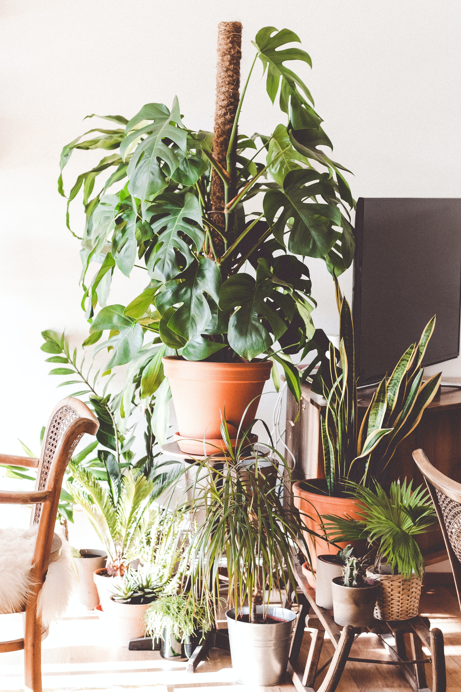

Define the goals, parameters, and key performance indicators of the assingment. I then gather quantitative and qualitative information that will define the scope of the project and focus only on what is most profitable.
With data in hand, it is contextualize it by creating user flows, personas, journey maps, and wireframes. This is the founation of the design solution and the blueprint used to create an effective outcome.
The solution made material and parameters tested. Users and stakeholders have a hands on experience with the solution. More insights are realized and more information is attained.
We see what works and what can be improved. My method calls for deep research, thourough planning, agile implementation, and quick pivoting when needed.
Creating experiences for the web and making them easy and enjoyable to use. Intuitive and engaging designs meant to attract and convert users.
Crafting usable and beautifiul interface with HTML, CSS, JavaScript, and backend databases with languages such as MySQL and C#.
Using empathy, research, data, agile metheologies, and iterative processes to create a top notch product quickly and efficiently.